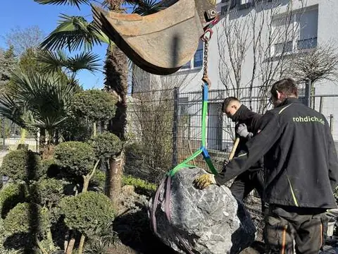
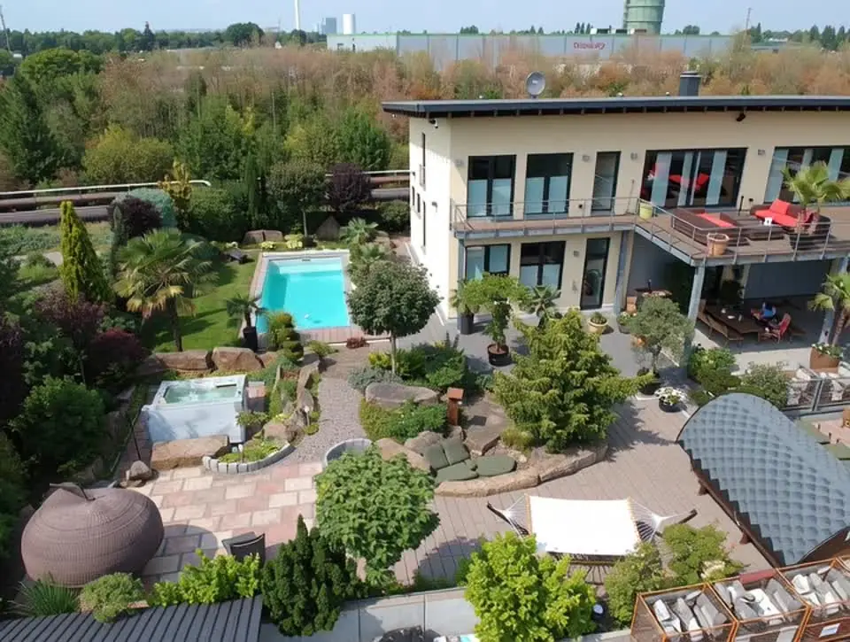

Herne
Gartenbau mit Handschlagqualität.
Drei Sätze in der Ich-Form. Warum 2003, worauf er zuerst schaut, warum er lieber abrät.
„Ein Satz von Maik – der, mit dem er abrät, statt zu verkaufen, was nicht hält.“
Maik Rohdich, Gartenbaumeister
In Herne und Umgebung – seit über 20 Jahren erfolgreich! Wir übernehmen die Ausführung anspruchsvoller Außenanlagen im öffentlichen, gewerblichen und privaten Bereich.
Unsere Schwerpunkte liegen in der Realisierung hochwertiger und anspruchsvoller Privatgärten sowie gewerblich genutzter Flächen und Gartenanlagen. Im Mittelpunkt steht dabei immer ein Ziel, nämlich die termingerechte Herstellung einer qualitativ hochwertigen Gartenanlage.
Unsere Tätigkeitsschwerpunkte liegen in:
Was nicht sinnvoll ist, sagen wir Ihnen vorher.
Besonderen Wert legen wir auf eine partnerschaftliche Zusammenarbeit und den daraus resultierenden langjährigen Geschäftsbeziehungen. Getroffene Absprachen haben für uns den gleichen Stellenwert wie schriftliche Verträge. Dem kommt aufgrund der immer kürzer werdenden Bauzeiten besondere Bedeutung zu, da nicht alle Vereinbarungen, die auf der Baustelle getroffen werden, vor allem kurzfristige Änderungen, auch schriftlich zu Papier gebracht werden können.
Für unsere Aufträge stehen uns unsere eigenen Fachleute aus dem Mitarbeiterkreis sowie Spezialisten aus den verschiedenen angrenzenden Gewerken, wie etwa der Entwässerungstechnik, zur Seite.
Somit sind wir in der Lage, von der Planung, über die Kostenermittlung, Realisierung und Koordinierung, bis hin zur Pflege alle Arbeiten aus einer Hand zu erledigen.

Gestaltung, Vorgarten, Terrasse, Teich, die Pflege danach – und vieles mehr.
Außenanlagen pflegen und umgestalten, Baumkontrollen mit Dokumentation und Gutachten.
Unser Team arbeitet auch mit Kommunen und öffentlichen Auftraggebern.
Drei Beispiele aus der Umgebung.
Eine Stunde Hecke vor dem Geburtstag, ein Beet auffrischen, ein Baum, der weg muss.
Dafür kommen wir mit denselben Leuten und demselben Gerät wie für die großen Aufträge. Es muss nicht gleich der ganze Garten sein.
1.500 m²
Pflanzen, Materialien und Teichanlage im echten Maßstab. Hier sehen Sie, wie ein Belag nach fünf Jahren aussieht.
Besichtigungen nur nach Absprache – so können wir uns Zeit nur für Sie nehmen.

Fragen zum Ablauf beantwortet die FAQ auf der Startseite.
Betrieb und Qualifikation
Seit 2003, mit Sitz in Herne. Geführt wird der Betrieb von Gartenbaumeister Maik Rohdich. Gearbeitet wird in ganz NRW, auf Anfrage auch darüber hinaus.
Der Meisterzwang ist im Garten- und Landschaftsbau gefallen – anlegen darf heute fast jeder. Der Meisterbrief steht für die geprüfte fachliche Leitung und berechtigt zur Ausbildung. Dazu kommen die Zertifizierung als Baumkontrolleur der Landwirtschaftskammer, der Sachverständigentitel im Sachgebiet 2.4.1 und der Sachkundenachweis Pflanzenschutz.
Auftraggeber
Ja. Neben privaten Gärten arbeitet der Betrieb für Gewerbe, Hausverwaltungen und kommunale Auftraggeber.
Nein. Eine Stunde Hecke zählt genauso wie ein ganzer Garten. Kurzfristige Pflegeeinsätze übernehmen wir ebenso wie die komplette Neuanlage.